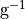
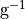
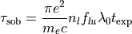

Opacity¶
There are several options for calculating and controlling the opacity of the gas in the calculation.
Though we generally use the word “opacity”, the code actually calculates and stores an extinction coefficient. The two are related by
where
 is the extinction coefficient (units ),
is the extinction coefficient (units ),
 is the opacity (units ),
and
is the opacity (units ),
and  is the mass density
is the mass density
Grey Opacity¶
The grey opacity flags allow the user to specify a simple, wavelength-independent opacity. Note that setting grey opacity will override all other forms of opacity described below.
To set a uniform grey opacity at all points in space, set the parameter:
opacity_grey_opacity = 0.1
where, in this example, the code will set the value to all zones in the model. All other sources of opacity discussed below (e.g., free-free, bound-free) will be ignored.
The user can also set a spatially varying grey opacity, provided that a dataset named grey_opacity giving the value of kappa in every zone has been set in an input hdf5 model file. Then setting:
opacity_zone_specific_grey_opacity = 1
will use the kappa defined in the model file
Continuum opacities¶
Electron Scattering Opacity¶
To turn on electron-scattering opacity:
opacity_electron_scattering = 1
This is calculated as
where  is the free electron density
is the free electron density
Options for include Klein-Nishina corrections, Comptonization etc…
Bound-Free Opacity¶
Free-Free Opacity¶
Line Opacity¶
There are various options for treating lines. In general, only one of these approaches should be used to treat lines, unless one can be certain that line opacity is not be multiply counted.
Resolved Bound-Bound Opacity¶
This approach is selecting by setting the runtime parameter:
opacity_bound_bound = 1
This approach treats the lines generally as Voigt profiles. The frequency good must be fine enough that there are multiple grid points across to resolve the line profile.
The widths of lines can be artificially broadened using the runtime parameter:
line_velocity_width = <real>
where <real> is a velocity (in cm/s) by which the lines should be Gaussian broadened.
Line Expansion Opacity¶
This approach is selected by setting the runtime parameter:
opacity_line_expansion = 1
This approach bins lines into frequency bins, assuming a homologous flow.
This approach implies the Sobolev approximation. For each line, the code calculates the Sobolev optical depth

where…
The expansion opacity is then calculated by binning lines

Some linelists (such as the Kurucz lists) are in a format that do not include as much detail about the atomic levels. These can be included as:
opacity_fuzz_expansion = 1
The physics here is identical to that of line expansion opacity, it is just that the lines are read from an independent file.
Resonant Line Scattering¶
This is how we would treat scattering in strong individual lines like Lyman alpha.
User Defined Opacity¶
You can write your own function
LTE and NLTE settings¶
Opacity Parameters¶
| parameter | values | definition |
|---|---|---|
| opacity_grey_opacity | <real> | value of grey opacity to use (in cm^2/g). Will override all other opacity settings |
| opacity_zone_specific_grey_opacity | 0 = no | 1 = yes | Use a zone-specific grey opacity dataset that is set in an hdf5 input model file and named grey_opacity |
| opacity_user_defined | 0 = no | 1 = yes | Calculate opacities by calling the function |
| opacity_epsilon | <float> | The fraction of |
| opacity_atom_zero_epsilon | <int> | |
| opacity_electron_scattering | 0 = no | 1 = yes | include electron scattering opacity |
| opacity_line_expansion | 0 = no | 1 = yes | include binned line expansion opacity |
| opacity_fuzz_expansion | 0 = no | 1 = yes | include binned line expansion opacity, taken from a fuzz file |
| opacity_bound_free | 0 = no | 1 = yes | include bound-free (photoionization) opacity |
| opacity_free_free | 0 = no | 1 = yes | include free-free opacity |
| opacity_bound_bound | 0 = no | 1 = yes | include bound-bound (resolved line) opacity |
| opacity_use_nlte | 0 = no | 1 = yes | include nlte opacity |
| opacity_atoms_in_nlte | <int vector> | A vector of atomic numbers of the species to be treated in NLTE |
| opacity_use_collisions_nlte | 0 = no | 1 = yes | only matters if use_nlte == 1, include collisions for nlte calculations |
| opacity_no_ground_recomb | 0 = no | 1 = yes | Suppress all recombination transitions to the ground state in the NLTE level population solve |
| opacity_minimum_extinction | <float> | Minimum value of the extinction coefficient (units 1/cm) in any zone |
| opacity_maximum_opacity | <float> | Minimum value of the extinction coefficient (units 1/cm) in any zone |
| opacity_no_scattering | 0 = no | 1 = yes | if = 1, will not include any kind of scattering opacity |
| dont_decay_composition | ||
| opacity_compton_scatter_photons | ||
| line_velocity_width | <float> | velocity in cm/s used to doppler broaden the (bound bound?) lines |
| line_x_extent |